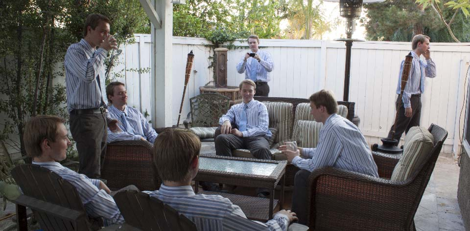
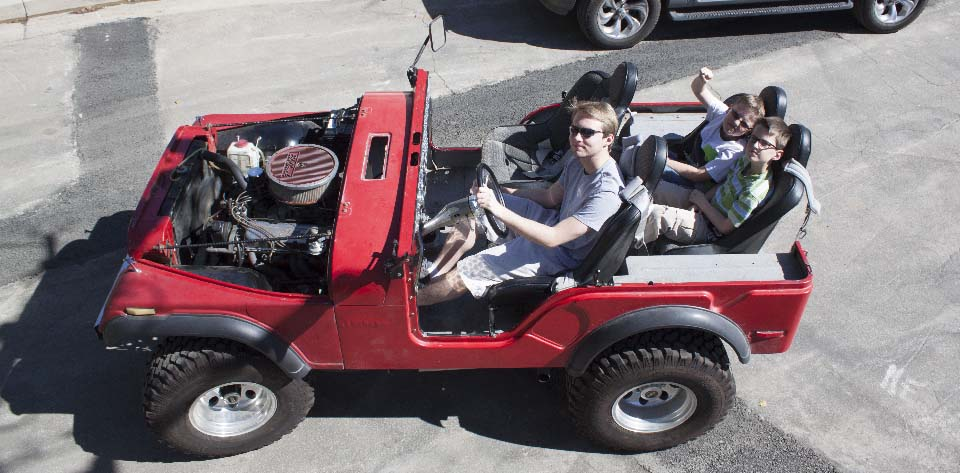

Full Stack Developer — Hard Working, Adaptable
I enjoyed learning about new technologies at a very young age, and began disassembling nearly everything out of curiosity. This led to me deconstructing my first computer, introducing me to an incredibly fascinating world of programming.
I am passionate about programming, technology, and broadening my knowledge. In my free time, I challenge myself with projects out of my comfort zone. As a result, I have learned countless programming languages, frameworks, and problem solving techniques. I maintain a list of frameworks and languages I am familiar with in the sidebar. I regularly attend hackathons to meet other people like me and to challenge myself. I have experienced a broad range of industry, from working in chemistry labs to database administration to app development to management.
Hobbies — Photography, Cars
Outside of technology, I enjoy photography and cars. Any time I go somewhere worth remembering I take hundreds of photos and then filter it down to just a few which I edit and publish. I will soon have over 6000 photos. During my senior year of high school I bought a 1972 Jeep CJ5 in need of repair. I designed and installed a new dashboard and new gauges. Years of taking apart electronics in my childhood prepared me to completely rewire the Jeep based only on understanding how the electronics should work. The Jeep was equipped with 37-inch wheels and an AMC 360, making it perfect for off-roading.
- 
- 
-

Boeing — IT, Chemistry
In June 2012 I began an internship at Boeing in Huntington Beach, CA. My primary role was to generate reports for the 787 program and attend to IT related tasks. In an effort to branch out, I took to the chemistry lab where I tested composite material and generated reports. I was awarded most influential leader.
Two years later I was selected as one of 20 from the past 300 interns to participate in the pilot of the Boeing Engineering Accelerated Mentorship. I was involved in planning and creating the next structured internship program to be launched across Boeing nationwide.
Beckman Coulter — Networking, IT, Analytics
In May of 2014 I began an internship at Beckman Coulter in Brea, CA. I was a member of the Global Network Services staff, where I developed an analytic and network monitoring dashboard. The dashboard interfaced with over 3000 devices on Solarwinds Orion, Junos Space, NetMRI, and AirWave (Aruba). This internship primarily strengthened my SQL and design skills. In addition, I replaced a core network switch during non-production hours.
Castifi — Management, Marketing, App Development, Database Administration
In June of 2016 I began working at a small startup, Castifi. Our goal is to provide a better experience for background actors (extras) by providing faster payroll, live updates, and no fees. Beginning with a team of four and fewer than 100 users, my team grew Castifi to 10,000+ users. I was involved in creating and presenting sales pitches, project management, database administration, software engineering, and app design. Castifi gave me incredible insight on the inner workings of both small and large businesses, in addition to experience with management and software development skills. In the course of one year, my team and I published an Android, iOS, and web app using Angular2/4, Typescript, Loopback, PostgreSQL, Heroku, and AWS.
Education — Computer Science, Applied Math, Physics
While working at Castifi, I studied at and graduated from Cal Poly Pomona with B.S. in Computer Science as well as a heavy background in Applied Mathematics and Physics.
Prior to university, I attended Fullerton College, Santiago Canyon College, and Brea Olinda High School. In high school I quickly learned the basics of programming through the Global IT Academy, a four year high school program aimed at introducing students to programming and providing a head start in Computer Science. I was awarded Most Influential Member of GITA at the end of the program.